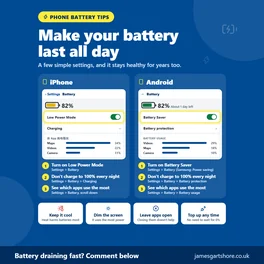
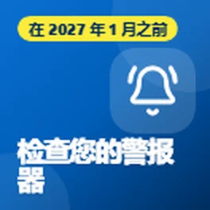

本页面为自动翻译。如有不通顺之处，请告诉我。
布里丁顿和东约克郡的免费技术小贴士
关于电话、电脑和在线安全的地道语言帮助。免费，无需注册。
最新提示

Get Online Week Day 3
It's day three of Get Online Week, and today's tips are about free tools that help you stay safe from scams.

Phone Stolen
I wanted to share what to do if your phone is ever lost or stolen, and a couple of things worth doing now, just in case.

Reopen a Closed Web Page
Have you ever closed an important web page on your phone by mistake, like a form you were filling in or a page you needed? Don't panic, you can usually...
Switch Phone Network
I wanted to share a really easy way to switch your mobile phone network and keep your number, without having to ring up and be talked into staying.
Braille Week Day 7
It's the last day of National Braille Week, so I wanted to finish with some ways technology is making braille easier to learn and use.
Get Online Week Day 2
It's day two of Get Online Week, and today I wanted to share some free places where you can learn online skills at your own pace.
图书馆电子书
With the dark evenings drawing in, I wanted to share something lovely that a lot of people don't know about: you can borrow eBooks and audiobooks from...

Make your battery last all day
With the colder days coming in, here are a few simple ways to make your phone battery last longer, on both iPhone and Android.
Braille Week Day 6
It's day six of National Braille Week, and today's tips are for computers and laptops.
Get Online Week
This week is Get Online Week, a national campaign to help more people feel confident using the internet. Being online has become part of everyday life,...
Voice Clone Scam
I wanted to share a warning about a scam that's becoming more common: phone calls using a copy of a family member's voice.
Braille Week Day 5
It's day five of National Braille Week, and today I wanted to share how you can control your phone using just your voice.
Dyspraxia Day 7
脑瘫意识周的最后一天，我想分享一些对成人和学生的帮助，因为脑瘫不会停止...

Landline Switchover
我想分享一些对任何有个人警报（比如吊坠或跌倒警报）的人来说很重要的事情，这些警报可以连接到他们的家庭电话线路。
Braille Week Day 4
今天是全国盲文周的第四天，今天的提示是关于你可以通过收听的图书、广播和电视的。

Cut Your Bills
今天是消除贫困国际日，所以我想分享一些免费工具，可以帮助你削减宽带的费用……
Dyspraxia Day 6
今天是运动障碍意识周的第六天，今天我想分享一些帮助你出行所需的科技。
Braille Week Day 3
今天是全国盲文周的第三天，今天我想分享一些免费方法，让你的手机或电脑可以为你大声朗读内容。
Dyspraxia Day 5
今天是运动障碍意识周的第五天，今天的提示都是关于如何行动的。

Food Apps
今天是世界粮食日，所以我想分享一些免费应用，可以帮助您省下食物的钱，并防止好食物被浪费。
Restart a Heart
今天是心脏重启日，所以我想分享一些可以帮助您学习心肺复苏（CPR）并准备好帮助别人应对心脏骤停的免费应用和网站。
Braille Week Day 2
今天是全国盲文周的第二天，今天也是白色手杖安全日，所以我想分享一些帮助视力受损人士的免费应用……
Dyspraxia Day 4
今天是执笔困难症宣传周的第四天，今天我想分享一些让阅读更轻松的免费工具。
Fake Parcel Texts
我想提醒大家注意假包裹派送短信，因为这目前是最常见的诈骗之一。
Dyspraxia Day 3
今天是执笔困难症宣传周的第三天，今天的建议是给任何觉得写字困难的人。
Phone Eyesight Features
本周是全国盲文周，所以我想分享一些可以在您的手机上做的事情，如果您的视力不是……
Old Phone or Laptop
今天是国际电子垃圾日，这是一个提醒我们注意那些放在抽屉里的旧手机、平板电脑和笔记本电脑的好机会。我们大多数人都有...
Dyspraxia Day 2
今天是发育迟缓意识周的第二天，今天我想分享一些帮助保持有条理的免费工具。
Phone in an Emergency
今天是国际灾害风险降低日，所以我想分享一些你的手机功能，它们在紧急情况下真的能帮到你....
Arthritis Day
今天是世界关节炎日，所以我想分享一些你的手机和笔记本电脑的功能，如果你的关节疼痛、僵硬或...
自闭症周
本周是发育迟缓意识周，所以我想分享一些科技可以帮助发育迟缓儿童的方法。这个想法是利用科技来帮助他们...
心理健康日
世界心理健康日是10月10日，所以我想分享一些你的手机已经可以做的一些简单事情，帮助你感觉平静和更...
Online Communities
我想分享一些很多人没有意识到存在的东西。
Find a Bad App
接着我之前关于可怕弹出广告的帖子，如果你在没有使用任何应用时手机上仍然出现广告，可以做些什么。
Scary Pop-up Ads
我想分享一个关于有时在手机上出现的那些可怕弹出窗口的提示。
Sat Nav Update
这里有一个快速提示，给仍然在车里使用导航系统的人。
入围Time2Volunteer 2026奖
我想分享一些消息。我最近入围了Time2Volunteer 2026奖，感谢我在当地科技支持方面所做的志愿服务……
Computer Safety
我想分享一些关于如何保护电脑的提示，因为很多人最终会为他们实际上不需要的杀毒软件付费。
什么是二维码？
我只是想分享一个关于二维码的快速小贴士。
Heating Timers
随着天气越来越冷，现在是检查您的供暖和热水定时器的好时机。
Heating Check
随着冬天临近，现在是测试您的供暖的好时机，特别是如果今年用得不多的话。
按主题浏览小贴士
- Scams and staying safe (7)
- Health and wellbeing (17)
- Money (3)
- Getting online and staying connected (5)
- 新闻 (1)
- Everyday tech (8)
人们的评价
非常感谢您，先生
是的，非常有用，谢谢。我会分享给我觉得用得上您小贴士的人 😃
很有帮助，谢谢
通过电子邮件接收新小贴士
我发布新小贴士时会发一封简短的邮件。免费，随时可以退订。
您会收到一封确认邮件。邮件由 follow.it 发送，每封邮件都有退订链接。